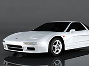

HONDA NSX 92' - STAGE 3
La Honda NSX de 1992, dans sa version Stage 3, représente l'apogée de l'ingénierie japonaise de l'époque, combinant puissance, agilité et raffinement dans une voiture de sport emblématique.
Dotée d'un moteur V6 de 3,0 litres méticuleusement préparé en collaboration avec les ingénieurs de renom d'Ayrton Senna, la NSX Stage 3 offre des performances incroyables. Grâce à des ajustements précis et à des améliorations de la gestion électronique du moteur, elle délivre une puissance encore plus impressionnante tout en conservant une fiabilité exceptionnelle.
Le châssis en aluminium léger et la suspension réglée avec soin offrent une maniabilité chirurgicale, permettant des virages serrés avec une précision millimétrique. Les freins améliorés assurent un contrôle total même lors des arrêts les plus brusques, ajoutant une confiance supplémentaire au conducteur.
À l'intérieur, le cockpit est un mélange de luxe et de sportivité, avec des matériaux de haute qualité et des technologies avancées pour l'époque. Chaque détail est pensé pour offrir une expérience de conduite immersive et confortable, même lors de trajets longs et exigeants.
La Honda NSX Stage 3 de 1992 incarne l'esprit de l'innovation et de la performance sans compromis, restant une référence incontournable pour les passionnés de voitures de sport et un témoignage vivant de l'expertise légendaire de Honda dans ce domaine.
Spécificités techniques du véhicule
| Caractéristique | Valeur |
|---|---|
| Moteur | V6 3,0 litres |
| Puissance | 280 chevaux |
| Couple | 304 Nm |
| Transmission | Boîte manuelle 6 vitesses |
| Accélération (0-100 km/h) | 5,7 secondes |
| Vitesse maximale | 270 km/h |
| Châssis | Aluminium léger |
| Suspension | Réglable |
| Freins | Disques ventilés, ABS |
| Pneus | Avant 215/45 R16, Arrière 245/40 R17 |
| Poids | 1350 kg |
| Consommation moyenne | 10 L/100km |